An undervalued asset
Preserved ecosystems produce water, climate stability, food, and identity, yet are priced only once they are extracted. Whoever learns to value them first defines the market.
The Embassy of Nature (TEON) is an institution of functional government for nature. It was founded to carry nature’s voice into the economic, political, and cultural decisions of the world, so that preserving can generate prosperity and strengthen the natural sovereignty of nations.
Advanced with the support of the UN International Youth Organization and the Global Youth Leadership Program
For centuries, nature was present in every decision and absent from the table where those decisions were made. We learned to measure with precision the value of what could be extracted from it, and left unrepresented the value of keeping it alive.
A declaration of rights opens the way. What follows requires institutions able to give those rights expression, agreements able to sustain them, and an economy able to recognise them.
The economies that learn to price what they preserve will lead this century. TEON exists to organise that transition.
It pursues that mission through its own doctrine, its platforms, and cooperation with states. TEON develops a model of non-state functional sovereignty: an architecture of representation, responsibilities, and capacities defined by its own organs and by the agreements it enters into with states and other institutions. The formula describes an institutional ambition and functions that are constituted progressively; it does not claim territorial jurisdiction or an international personality recognised by every state.
TEON works for the recognition of nature as a subject of rights in the international order, and for the institutional forms capable of representing its interests.
An architecture created to give nature an institutional voice in the decisions that affect it.
Organs, rules, and responsibilities that grow through public documents, verifiable work, and agreements with states.
Open embassies where nature has presence, culture, diplomacy, and a civilisational language.
A proposal for preserved nature to compete economically with exploited nature.
Generations who will live longest with today’s decisions, convened from the outset with voice and responsibility.
TEON does not replace governments, international organisations, communities, or existing legal frameworks. It complements them.
A declaration of rights opens the way. Institutions give it consequence.
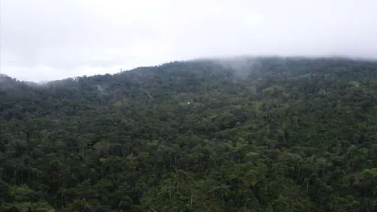
Nature has begun to be recognised as a subject of rights. That affirmation transforms our idea of justice. It also obliges us to ask a question the world has not yet fully answered: who carries its voice to the places where its future is decided?
We were born to give institutional form to a presence that should never have been missing.
TEON organises capacities of its own and develops agreements so that the rights of nature find expression in the decisions that matter. This page distinguishes what the institution exercises today, what it is designing, what its agreements confer, and what will require constitutive acts.
TEON develops a model of non-state functional sovereignty: an architecture of representation, responsibilities, and capacities defined by its own organs and by the agreements it enters into with states and other institutions. It claims no territorial jurisdiction and no international personality recognised by every state.
Functional Government →The most strategic bet of this century is the asset we have not yet destroyed. Every economy runs on nature, yet almost none of it appears on a balance sheet. The institutions that learn to measure, protect, and structure that wealth will shape the markets of the coming decades.
Preserved ecosystems produce water, climate stability, food, and identity, yet are priced only once they are extracted. Whoever learns to value them first defines the market.
Under the Kunming-Montreal Global Biodiversity Framework, the world has committed to mobilising at least US$200 billion a year for biodiversity by 2030. What is missing are institutions able to structure it with rigour.
Nations hold the natural patrimony; investors hold the capital. TEON stands between them as a non-state institution, alongside nations and never above them, so that value is created with sovereignty and legal certainty.
An economy that does not consume its own asset base grows over generations, not quarters. Conservation stops being a cost and becomes the most durable form of wealth.
Turn natural patrimony into development, employment, and international standing, without surrendering sovereignty.
Access a new class of long-term value, structured under legal frameworks and measured with financial rigour.
Join an architecture that gives nature a voice where economic decisions are made.
We do not want to put a price on nature. We want to correct an economy that has acted for centuries as if destroying it had no cost at all.
Imagination does not decorate the future. It manufactures it.
For too long we believed that wealth lay only beneath the earth. The new economy begins when we recognise the value of what lives above it.
Founding President · opening address, Madrid, 2026
How nature and culture become strategic economic assets.
We design economic models where ecosystem protection generates profitability, employment, and long-term stability.
Conservation becomes the real economy.
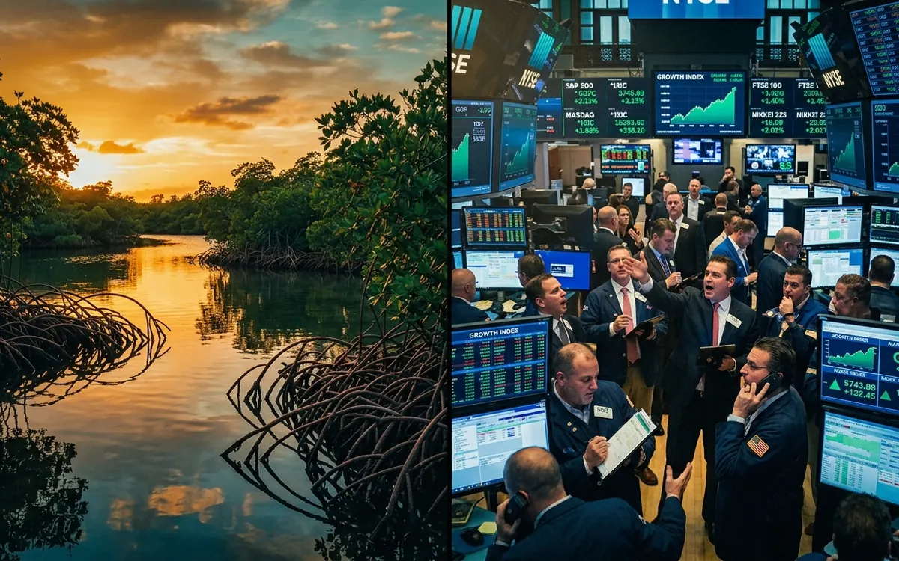
We transform culture and identity into living economic infrastructure, generating development and international standing.
Culture is a strategic asset.
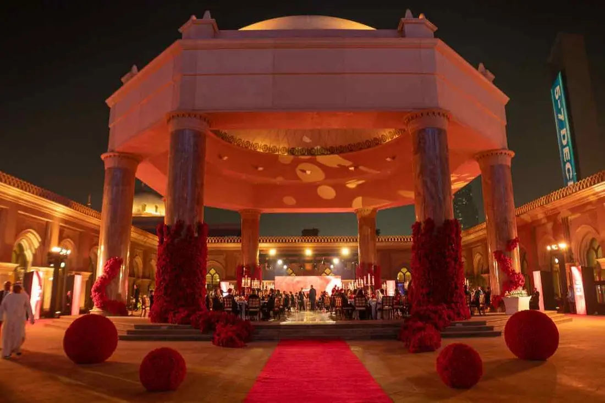
We facilitate dialogue among governments, organisations, companies, and communities as a specialised non-state actor.
Nature becomes a common language.
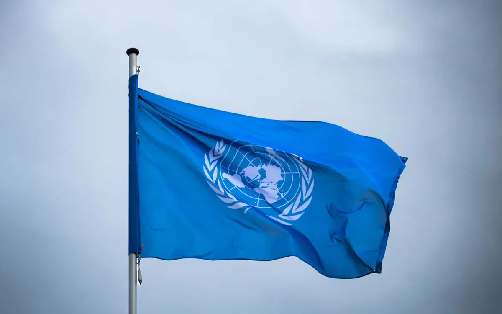
We create immersive sensory experiences and disruptive film productions that make the value of nature felt before it is argued.
What is felt is defended.
Young people will live longest with today’s decisions and will build the institutions still missing. TEON convenes them as authors, with voice and responsibility from the outset.
Authors of the new agenda of nature.
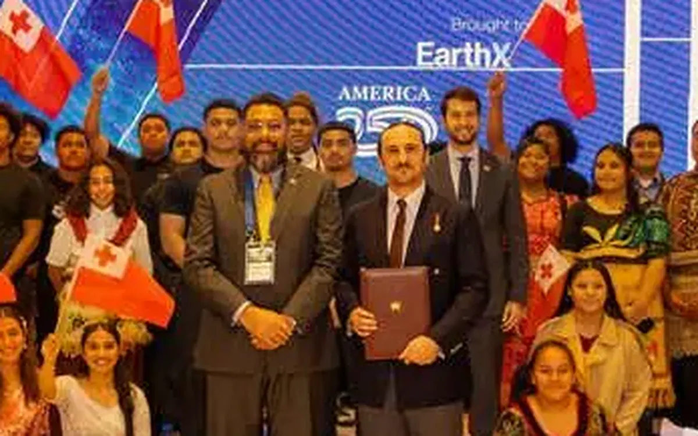
Everything The Embassy of Nature negotiates, finances, and defends begins in places like this.
A growing number of nations and courts now recognise nature as a subject of rights, a movement in which Ecuador was a pioneer when it enshrined those rights in its Constitution in 2008. TEON gives that idea an institution. These are the ecosystems it exists to represent: the natural capital on which every economy depends.
Natural water infrastructure: forests that harvest water from the clouds and hold much of the planet’s biodiversity.
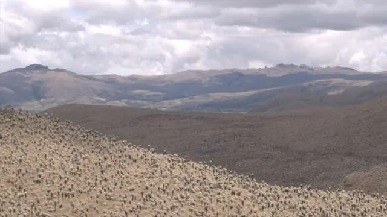
Natural reservoirs that store and regulate the water of entire cities.
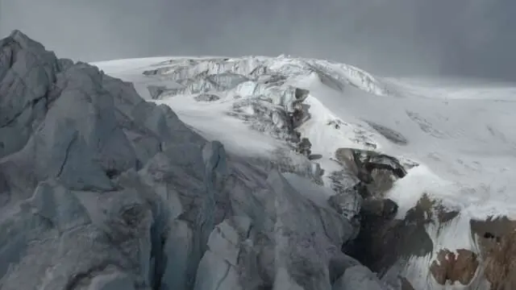
Freshwater reserves in retreat, on which agriculture, energy, and cities depend.
Where climate change is recorded first, and where its costs begin.
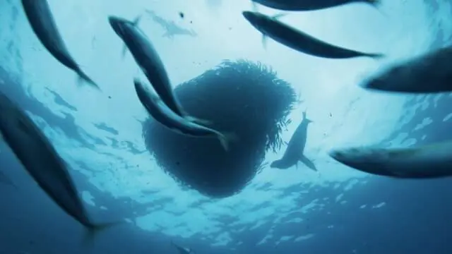
The planet’s largest carbon sink and a source of food for billions of people.
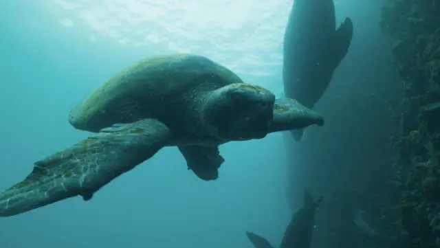
Assets still valued only once they are extracted. They are worth more alive.
Institutions are measured by where they are received and what they leave signed. Entries from the archive of The Embassy of Nature.
TEON is formally presented at United Nations Headquarters during the high-level week of the General Assembly: ecological interests, represented where nations convene.
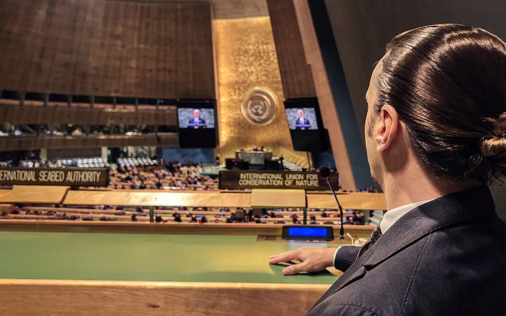
The Universal Declaration on Nature-Informed Governance and Public Policy Frameworks, launched at Harvard on 18 April 2026.
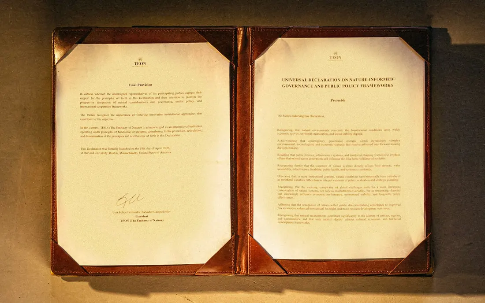
The restored Hôtel Hérouet, in Le Marais — one of the most important and historic quarters of Paris — reopened as the first embassy of nature.
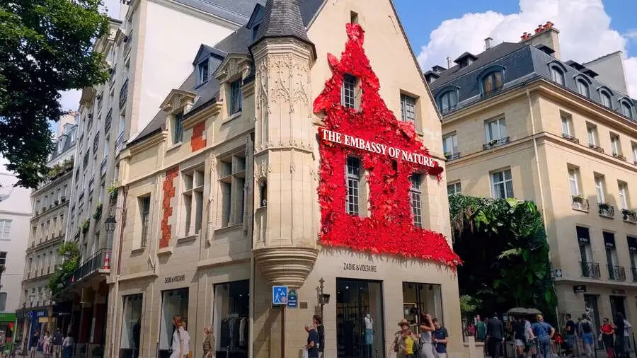
The highest honour conferred by the institution. Among those who have received it are the actor Woody Harrelson, the president of Groupe Clarins, former heads of government Álvaro Uribe and Mariano Rajoy, and FIFA President Gianni Infantino.
Institutional agreements signed across the hemisphere.
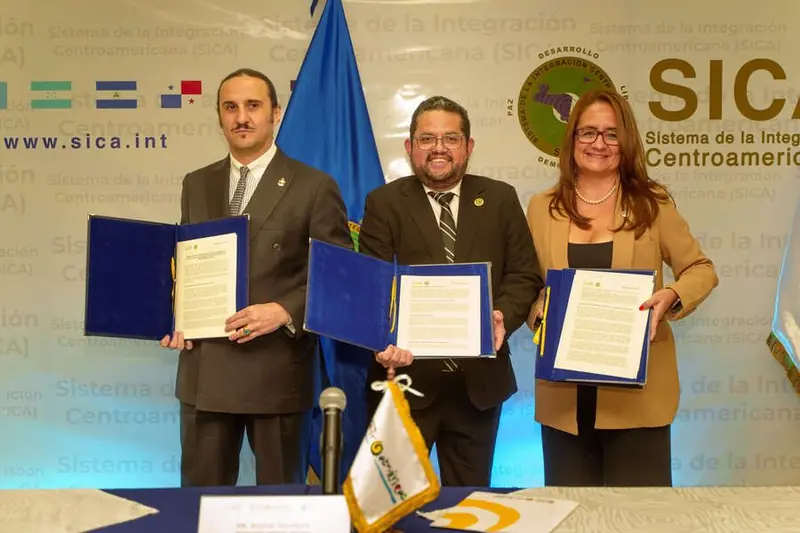
Where the mandate meets its patrons.
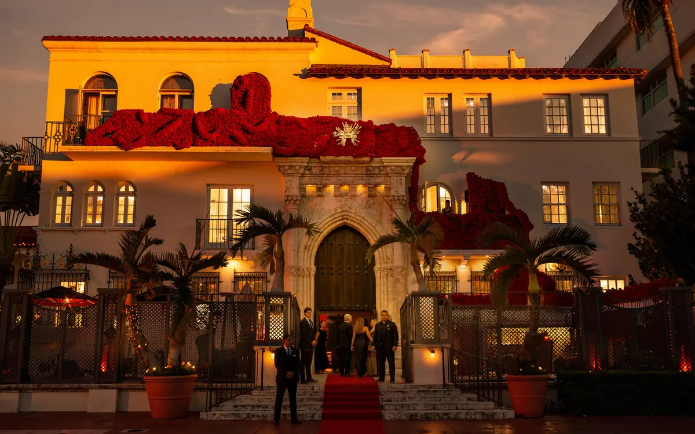
From national assemblies to international forums: the argument travels.
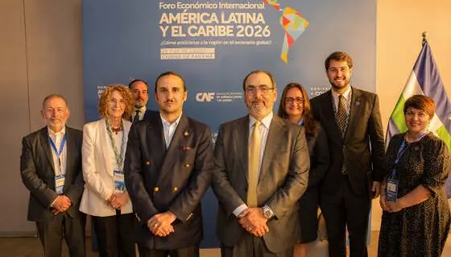
More than half of the world’s GDP — some US$44 trillion — is moderately or highly dependent on nature. TEON exists so that what the economy depends on is finally recognised, measured, and able to generate prosperity.
World Economic Forum, Nature Risk Rising, 2020.
These figures do not measure TEON; they measure the state of the planet. They are the indicators TEON works to improve, published so that anyone can follow their progress.
Sources: FAO, Global Forest Resources Assessment 2025 · UNEP-WCMC & IUCN, Protected Planet Report 2024 · IEA, IRENA, UNSD, World Bank & WHO, Tracking SDG 7, 2025 · World Bank, GDP (current US$), 2025.
The institution is the instrument. The baseline is the verdict.
The Embassy of Nature operates under enduring principles of legality, political neutrality, transparency, and institutional responsibility, by which it consents to be measured.
In all things, The Embassy of Nature maintains full compliance with international and domestic legal frameworks across every jurisdiction in which it acts, each initiative structured within recognised legal instruments and reviewed by independent counsel, without exception and without shortcut.
The Embassy of Nature holds itself independent of partisan agendas, for nature and culture transcend political cycles. It accepts no mandate that subordinates ecological stewardship to electoral calendars, and engages every government upon equal and non-partisan terms.
Governance is conducted in the open. Audited statements, governance charters, and verifiable impact indicators are published and renewed each year: accountability the public may read, and need not merely trust.
The Embassy of Nature holds itself answerable to its stakeholders, its partner nations, and the communities it is charged to steward, treating that trust as the first and most carefully kept asset of the institution.
Integrating nature, culture, and identity into real systems of economy, investment, and decision-making.
IIVisionAn institutional architecture integrating nature into economy, governance, and global decision-making, alongside nations.
IIIGuaranteesThe institutional guarantees that govern every TEON programme: sovereignty, voluntary cooperation, legal compliance, complementarity, and local context.
The Embassy of Nature maintains open embassies in six cities. Each one is a place of presence, culture and diplomacy for nature.
Le Marais
44 Rue des Francs Bourgeois, Paris, France
Calle Fortuny
Calle Fortuny 21, Madrid, Spain
Miami Beach
865 Michael St, Miami Beach, Florida, United States
Edificio Catalina Plaza
Catalina Aldaz 34-155, office 707, Quito, Ecuador
Ciudad Millenium · Edificio Platinum I
Av. León Febres-Cordero s/n, office 718, Guayaquil, Ecuador
Miraflores
Av. General Córdova 548, Miraflores, Lima, Peru
Nature needs people able to carry its rights into the decisions that move the world: law, investment, culture, science and the life of communities. TEON gathers those who want preservation to become a source of prosperity and nature to have a voice where its future is decided.